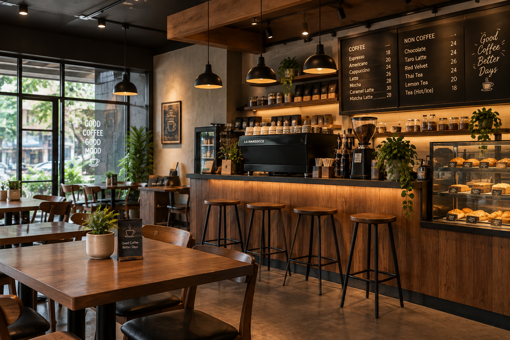

Cerita Usaha
Tentang Kopi Kuripan
Kopi Kuripan adalah UMKM pilihan yang mengolah kopi lokal untuk kebutuhan pembelajaran dan penikmat kopi harian.

Nilai yang Kami Bawa
- Bahan lokal dari petani sekitar.
- Proses sederhana dan transparan.
- Pelayanan ramah untuk pelanggan harian.